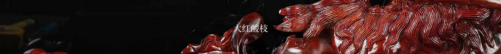
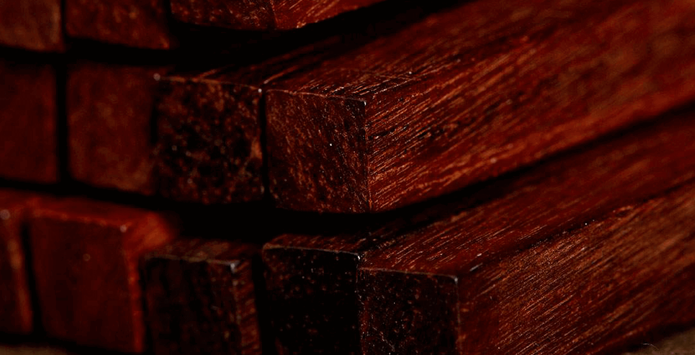
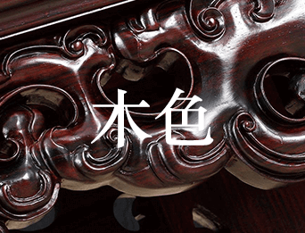
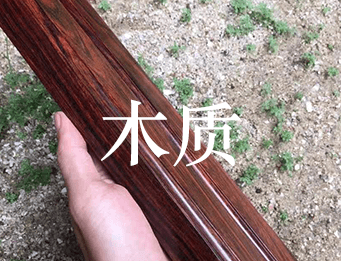
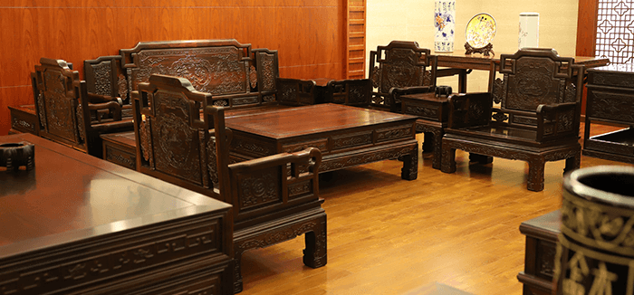
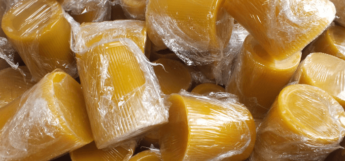
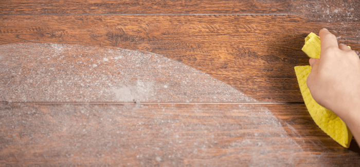
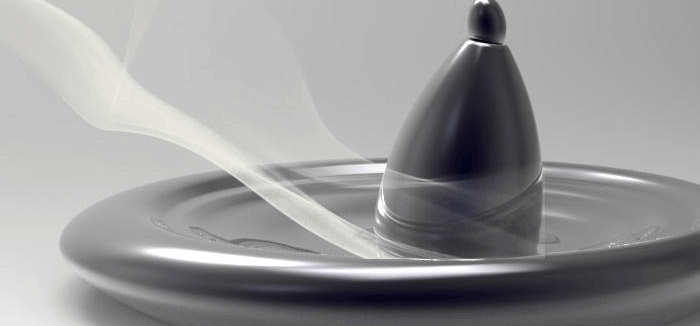
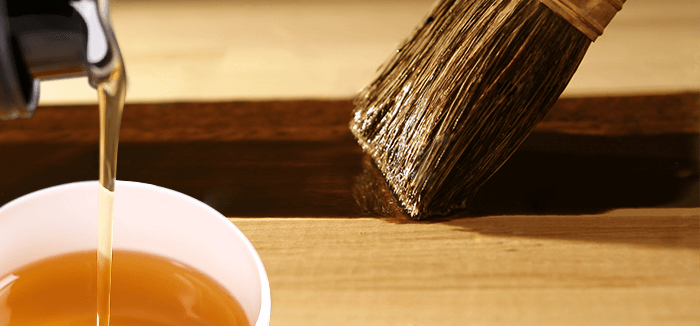

一般为赤红色或深红色，在空气中氧化可呈暗红色
木纹质朴美观，有深褐色或黑色直丝状条纹
大红酸枝锯开时，木材散发一种辛香，闻之有酸辛味

坚而重，结构细腻、油质重，可沉于水

看纹理
在深红色木面上夹有深褐色或者黑色条纹，而且放置时间越久会越接近深紫色甚至黑色。
看纹理
在深红色木面上夹有深褐色或者黑色条纹，而且放置时间越久会越接近深紫色甚至黑色。
看纹理
在深红色木面上夹有深褐色或者黑色条纹，而且放置时间越久会越接近深紫色甚至黑色。
摆放家具时，应该使用软薄垫将家具同物品的接触部位隔开，同时让家具的靠墙部位跟墙壁保持0.5-1厘米的间隙

定期打蜡，半年到一年期间内一次，但注意要量少，平时保养只擦家具背面、底面，不擦正面，对家具的水分进行适度封闭即可

尽可能不要使用湿布去擦家具灰尘。首先将家具表面灰尘轻轻拂去，再用干的纯棉布擦，以免颗粒灰尘伤害家具表层

室内要保持适当的湿度。如经常用湿布擦地或使用加湿器、养鱼，这对人与家具都有好处

不能直接用化学清洁 剂、酒精、汽油来擦拭大红酸枝家具。天然的核桃油或蜂蜡等天然保养剂轻轻拭污渍是最正确的

行业资讯

联系我们